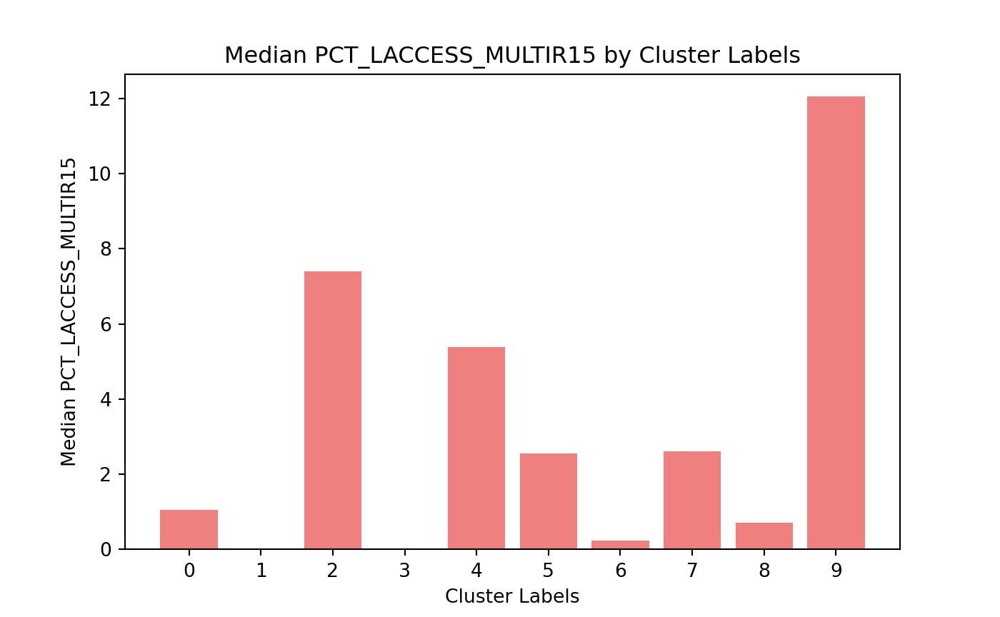

3 Clustering
Lets bring our data in for analysis.
import pandas as pd
import numpy as np
import matplotlib.pyplot as plt
data = pd.read_csv(r"C:\Project for IAA\N1\clustering_data.csv")
numeric_data = data.select_dtypes(include=['float64'])
print(numeric_data.info())## <class 'pandas.core.frame.DataFrame'>
## RangeIndex: 3143 entries, 0 to 3142
## Data columns (total 10 columns):
## # Column Non-Null Count Dtype
## --- ------ -------------- -----
## 0 PCH_LACCESS_POP_10_15 3143 non-null float64
## 1 PCH_LACCESS_HHNV_10_15 3143 non-null float64
## 2 PCT_LACCESS_SNAP15 3143 non-null float64
## 3 PCT_LACCESS_WHITE15 3143 non-null float64
## 4 PCT_LACCESS_BLACK15 3143 non-null float64
## 5 PCT_LACCESS_HISP15 3143 non-null float64
## 6 PCT_LACCESS_NHASIAN15 3143 non-null float64
## 7 PCT_LACCESS_NHNA15 3143 non-null float64
## 8 PCT_LACCESS_NHPI15 3143 non-null float64
## 9 PCT_LACCESS_MULTIR15 3143 non-null float64
## dtypes: float64(10)
## memory usage: 245.7 KB
## NoneNow I am going to conduct a principal component analysis (PCA). The point of this is to reduce the number of dimensions in our data which will hopefully make it easier for a clustering algorithm to perform quicker and more accurately.
from sklearn.decomposition import PCA
from sklearn.preprocessing import StandardScaler
import numpy as np
# Standardize the numeric data
scaler = StandardScaler()
scaled_data = scaler.fit_transform(numeric_data)
# Run PCA on the scaled data and get enough components to retain 80% of the
# variance(signal) in the data
pca = PCA(n_components = 0.8)
principal_components = pca.fit_transform(scaled_data)
pca_results = pd.DataFrame(principal_components)
explained_variance_ratio = pca.explained_variance_ratio_
print(explained_variance_ratio)## [0.2681349 0.14784806 0.13084329 0.10464956 0.10005973 0.09976022]We can use the first 6 PCA components to cluster together similar counties!
Now lets look at the most important variables in each of the 6 components.
# Access the loadings (coefficients) of each variable for each of the principal
# components
loadings = pca.components_
# Create a Data Frame for better interpretation
loadings_df = pd.DataFrame(loadings, columns=numeric_data.columns)
# For each component (row), identify the most important variable (highest absolute value)
most_important_variables = loadings_df.abs().idxmax(axis=1)
# Print the most important variable for each principal component
most_important_df = pd.DataFrame({
"Explained Variance Ratio": explained_variance_ratio,
"Most Important Variable": most_important_variables
})
print(most_important_df)## Explained Variance Ratio Most Important Variable
## 0 0.268135 PCT_LACCESS_MULTIR15
## 1 0.147848 PCT_LACCESS_NHPI15
## 2 0.130843 PCT_LACCESS_NHNA15
## 3 0.104650 PCT_LACCESS_BLACK15
## 4 0.100060 PCH_LACCESS_HHNV_10_15
## 5 0.099760 PCH_LACCESS_POP_10_15Here we can see which variable contributed the most to each of the 6 PCA components and the subsequent value for how much of the variance that PCA component can explain in our data.
Next, I am going to look at the first two components on a graph. The idea here is to see if the data points are spatially placed on the graph. If they are, I will move forward with the DBSCAN algorithm and if they aren’t, I will move forward with the k-means algorithm.
# Create a DataFrame for the first two principal components
pc_df = pd.DataFrame(principal_components[:, :2], columns=["PC1", "PC2"])
# Scatter plot of the first two components
plt.figure(figsize=(8, 6))
plt.scatter(pc_df["PC1"], pc_df["PC2"], alpha=0.7, edgecolor='k')
# Add labels and title
plt.title("Scatter Plot of the First Two Principal Components")
plt.xlabel("Principal Component 1")
plt.ylabel("Principal Component 2")
plt.show()
When looking at the graph, the data points are tightly packed together. Moving forward, I will run k-means clustering so I can group together similar counties.
Before creating the k-means clusters, I am going to create an elbow plot to find the optimal number of clusters I should use.
from sklearn.cluster import KMeans
# Define the range of number of clusters to try
cluster_range = range(1, 20)
inertia_values = []
# Run K-means for each number of clusters and compute inertia
for n_clusters in cluster_range:
kmeans = KMeans(n_clusters=n_clusters, random_state=22)
# Use the PCA results for clustering
kmeans.fit(pca_results)
#The inertia values are the sum of squared distances from each point to its
#assigned cluster center
inertia_values.append(kmeans.inertia_)KMeans(n_clusters=19, random_state=22)In a Jupyter environment, please rerun this cell to show the HTML representation or trust the notebook.
On GitHub, the HTML representation is unable to render, please try loading this page with nbviewer.org.
KMeans(n_clusters=19, random_state=22)
# Plot the elbow curve
plt.figure(figsize=(8, 6))
plt.plot(cluster_range, inertia_values, marker='o', linestyle='-', color='b')
plt.title('Elbow Method for Optimal Number of Clusters')
plt.xlabel('Number of Clusters')
plt.ylabel('Inertia')
plt.grid(True)
plt.show()Looking at the elbow plot, the optimal number of clusters moving forward is 10.
Now lets run the k-means algorithm with 10 clusters and put the cluster labels back onto the original data frame.
# Run K-means with 10 clusters
kmeans = KMeans(n_clusters=10, random_state=22)
kmeans.fit(pca_results) # Use the PCA results for clusteringKMeans(n_clusters=10, random_state=22)In a Jupyter environment, please rerun this cell to show the HTML representation or trust the notebook.
On GitHub, the HTML representation is unable to render, please try loading this page with nbviewer.org.
KMeans(n_clusters=10, random_state=22)
# Get the cluster labels for each data point
cluster_labels = kmeans.labels_
pca_results["Cluster Labels"] = cluster_labels
#Add cluster labels back to the orignal data
data["Cluster Labels"] = cluster_labels
